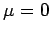

Inhalt Index DeskTop Bronstein

 Wahrscheinlichkeitsrechnung und Mathematische Statistik Theorie der Meßfehler Meßfehler und ihre Verteilung Fehlernormalverteilung
Wahrscheinlichkeitsrechnung und Mathematische Statistik Theorie der Meßfehler Meßfehler und ihre Verteilung Fehlernormalverteilung


In den meisten Fällen der Praxis kann davon ausgegangen werden, daß die Meßfehler normalverteilt sind, und zwar mit dem Mittelwert  und einer Streuung  , d.h., für die Dichtefunktion f(x) und die Verteilungsfunktion F(x) von Meßfehlern soll gelten:
, d.h., für die Dichtefunktion f(x) und die Verteilungsfunktion F(x) von Meßfehlern soll gelten:
und
| (16.194b) |
Dabei ist  die Verteilungsfunktion der normierten Normalverteilung (s. auch Tabelle Normierte Normalverteilung). Im Falle von (16.195a,b) spricht man auch von der Fehlernormalverteilung.
die Verteilungsfunktion der normierten Normalverteilung (s. auch Tabelle Normierte Normalverteilung). Im Falle von (16.195a,b) spricht man auch von der Fehlernormalverteilung.
In der folgenden Abbildung ist die Dichte der Fehlernormalverteilung (16.195a) mit Wende- und Schwerpunkt dargestellt.

Die nächste Abbildung zeigt das Verhalten der Dichte der Fehlernormalverteilung bei drei verschiedenen Werten der Streuung.
Die Wendepunkte liegen bei den Abszissenwerten , die Schwerpunkte der Flächenhälften bei . Der Maximalwert der Kurve bei x = 0 beträgt . Mit wachsendem  verbreitert sich die Kurve, wobei der Flächeninhalt unter ihr konstant gleich Eins bleibt. Die Verteilung besagt, daß, gemessen am absoluten Betrag, kleine Fehler häufig vorkommen, große selten.
verbreitert sich die Kurve, wobei der Flächeninhalt unter ihr konstant gleich Eins bleibt. Die Verteilung besagt, daß, gemessen am absoluten Betrag, kleine Fehler häufig vorkommen, große selten.